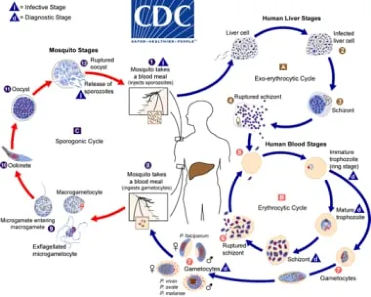
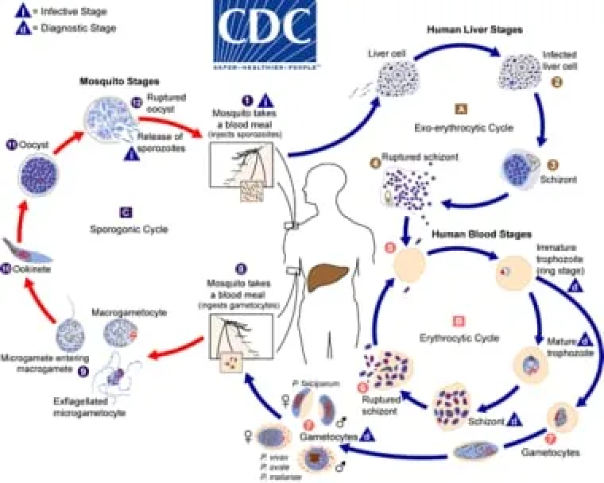

Malaria
Malaria is a life-threatening disease caused by parasites of
the genus Plasmodium. It is transmitted to humans through the
bites of infected female Anopheles mosquitoes Use of
insecticide-treated mosquito nets (ITNs), indoor residual
spraying (IRS), and elimination of mosquito breeding sites..
Causes and Symptoms
- Parasites: The main species causing malaria in humans are Plasmodium falciparum, P. vivax, P. ovale, P. malariae, and P. knowlesi.
- Transmission: The disease is primarily spread by Anopheles mosquitoes, which are active from dusk to dawn. The parasites enter the human bloodstream through mosquito bites and travel to the liver, where they mature and reproduce.
Symptoms
- Initial Symptoms: Fever, chills, headache, nausea, vomiting, muscle pain, and fatigue. These symptoms typically appear 10-15 days after the infective mosquito bite.
- Severe Malaria: Without prompt treatment, malaria can progress to severe illness, causing anemia, cerebral malaria (affecting the brain), acute respiratory distress syndrome (ARDS), organ failure, and death.